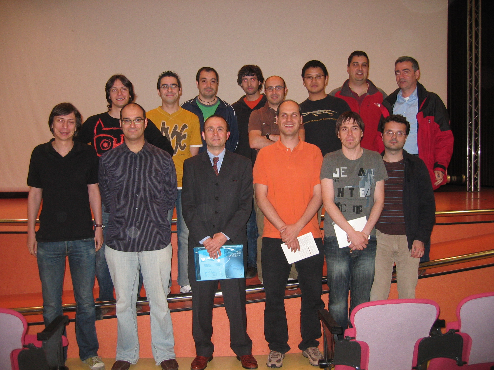

Qiong Cai's Virtual Home
Qiong Cai (last updated on October 14, 2017)

Disclaimer: The opinions expressed here are my own and do not necessarily represent those of current or past employers.
I am working in Apple as a SoC architect now. In the past, I worked in Hewlett Packard Labs (Palo Alto) for almost two years. The key focus at that time was to improve performance and power efficiency for a Gen-Z based rack-scale system called The Machine.
I received Bachelor of Computer Science and Bachelor of Mathematics from University of Wollongong (Australia) in 2000 and Bachelor of Computer Science (the first class honours) from University of New South Wales (Australia) in 2001. I did my PhD research on compiler optimization and received a PhD in Computer Science from University of New South Wales in 2006.
I joined Intel Labs Barcelona as a senior research scientist in 2005 and particpated projects related to compiler optimization, power-efficient CPU microarchitecture and programmable accelerators. I became a people manager and technical lead of 6 researchers in 2010. The team was working on emerging memory technologies such as 3D XPoint, eDRAM and STTRAM for Intel's Skylake client and server systems and beyond. I was the architecture performance owner of Intel's 3D XPoint server chip.
Personal Projects
- Statistical Graphics in MetaPost (work-in-progress)
Work Experience
I am working in Apple as a SoC architect now.
I worked on The Machine (TM) architecture in Hewlett Packard Labs for almost two years after I joined the labs in January 2015. The Machine is a rack scale system with 320TB globally addressable memory pool. I was working on three topics: (1) the design and implemenation of memory-side accelerator for a rack-sacle system; (2) the performance characterization of HPC, Big Data and Spark-based workloads for TM; and (3) the architecture techniques to improve latency and bandwith for the memory fabric subsystem in TM.
I led a team of 6 researchers in Intel Labs Barcelona between 2010-2014 None of my work during this period is published externally. The work was either published internally or filed/issued as patents. Please see the patent section below.. We were working on the client and server platforms based on emerging memory technologies. My technical work included (1) path finding with product groups to define Crystal Ridge server system; (2) performance owner of 3D XPoint-based memory controller and path finding for 2nd generation of 3D XPoint; (3) path finding with Intel's component research group to define STTRAM-based computer system; and (4) the design and implementation of a set of large cache management techniques for high bandwidth memory technologies such as eDRAM and wideIO2.
I worked as a researcher in Intel Labs Barcelona between 2005-2009. I participated two research projects. The first one was to design a power and thermal-aware microprocessor. I proposed and implemented several CPU microarchitecture techniques such as thread migration, critical thread identificaiton and software-hardware co-designed steering techniques for a clustered processor. The whole project won a Spanish technology award in 2008. The second project was to design a programmable accelerator. I was the chief architect of the accelerator, and the accelerator was one of candidates for a video processor being incorporated into Intel's Merrifield SoC.
Education
I did my PhD in University of New South Wales, Sydney, Australia, between 2002-2006. The thesis title is profile-guided redundancy elimination. The key contribution is the design and implemenation of a computionally optimal profile-guided partial redundancy elimination (PRE). This is the first computionally optimal profile-guided PRE algorithm.
I obtained my Bachelor of Science in Computer Science (1st class Honours) from University of New South Wales in 2001. The title of Honours thesis is speculative partial redundancy elimination in dynamic compilation. I got my Bachelor of Mathematics and Bachelor of Computer Science (the double degree) from University of Wollongong in 2000.
Publications
- Rafael Kioji Vivas Maeda, Qiong Cai, Jiang Xu, Zhe Wang and Zhongyuan Tian, Fast and Accurate Exploration of Multi-Level Caches Using Hierarchical Reuse Distance, 23rd IEEE Symposium on High Performance Computer Architecture, HPCA 2017.
- A. Eisenman, L. Cherkasova, G. Magalhaes, Q. Cai, and S. Katti, Parallel Graph Processing on Modern Multi-core Servers: New Findings and Remaining Challenges, 24th IEEE International Symposium on Modeling, Analysis, and Simulation of Computer and Telecommunication Systems, MASCOTS 2016 (Best Papers Second Runner-up).
- A. Eisenman, L. Cherkasova, G. Magalhaes, Q. Cai, P. Faraboschi and S. Katti, Parallel Graph Processing: Prejudice and State of the Art, 7th ACM/SPEC International Conference on Performance Engineering (ICPE), 2016. I published 6 internal papers between 2011 and 2013 in Intel Labs. Due to Intel confidential policy, I cannot list them here. Some of them were filed as patents.
- Q.Cai, J. Gonzalez, G. Magklis, P. Chaparro and A. Gonzalez,Thread Shuffling: Combing DVFS and Thread Migration to Reduce Energy Consumption for Multi-Core Systems, International Symposium on Low Power Electronics and Design (ISLPED), 2011.
- R. Rakvic, Q. Cai, J. Gonzalez, G. Magklis, P. Chaparro and A. Gonzalez, Thread Management Techniques to Maximize Efficiency in Multicore and Simultaneous Multi-threaded Microprocessors, ACM Transaction on Architecture and Code Optimization, Vol 7, No. 2, 2010.
- R. Rakvic, J. Gonzalez, Q. Cai, P. Chaparro, G. Magklis and A. Gonzalez, Energy Efficiency via Thread Fusion and Value Reuse, IET Computer and Digital Techniques, Vol 4, Issue 2, 2010.
- P. Chaparro, J. Gonzalez, Q. Cai and G. Chrysler, Dynamic Thermal Management using Thin-Film Thermoelectric Cooling, International Symposium on Low Power Electronics and Design (ISLPED), 2009.
- Q. Cai, J. Gonzalez, R. Rakvic, G. Magklis, P. Chaparro and A. Gonzalez, Meeting Points: Using Thread Criticality to Adapt Multicore Hardware to Parallel Regions, International Conference on Parallel Architecture (PACT), 2008.
- J. Gonzalez, Q. Cai, P. Chaparro, G. Magklis, R. Rakvic and A. Gonzalez, Thread Fusion, International Symposium on Low Power Electronics and Design (ISLPED), 2008.
- Q. Cai, J. M. Codina, J. Gonzalez and A. Gonzalez, A Software-Hardware Hybrid Steering Mechanism for Clustered Microarchitecture, 22nd IEEE International Parallel and Distributed Processing Symposium (IPDPS), 2008.
- P. Chaparro, J. Gonzalez, G. Magklis, Q. Cai and A. Gonzalez, Understanding the Thermal Implications of Multi-Core Architecture, IEEE Transactions on Parallel and Distributed Systems, Special Section on CMP Architectures, 18(8), 2007.
- J. Xue and Q. Cai, A lifetime Optimal Algorithm for Speculative PRE, ACM Transactions on Architecture and Code Optimization, 3(2), 2006.
- J. Xue, Q. Cai and L. Gao, Partial Dead Code Elimination on Predicated Code Region, Software-Practice and Engineering, 36(15), 2006.
- Q. Cai, L. Gao and J. Xue, Region-based Partial Dead Code Elimination on Predicated Code, International Conference on Compiler Construction, 2004.
- Q. Cai and J. Xue, Optimal and Efficient Speculative-based Partial Redundancy Elimination, 1st Annual IEEE/ACM International Symposium on Code Generation and Optimization, 2003.
Technical Report
- F Chen, M. T. Gonzalez, K. Viswanathan, Q. Cai, H. Laffite, J. Rivera, A. Mitchell and S. Singhai, Billion node graph inference: iterative processing on The Machine, HPE-2016-101, Hewlett Packard Labs Technical Report.
- Z. Deng, C. Xu, Q. Cai and P. Faraboschi, Reduced-Precision Memory Value Approximation for Deep Learning, HPL-2015-100, HP Labs Technical Report.
Poster
- F. Zyulkyarov, Q. Cai, S. Ozdemir and N. Kirman, Better User Experience with Future Memory Technologies, Research@Intel 2012.
- Q. Cai, M. Nicolaides, C-W Li, R. Osborne, S. Srinivasan, A. Kagi and D. Binks, Understanding Caching Behavior of Graphic Workloads, Research@Intel Europe 2011.
Issued and Filed Patents
-
During Hewlett Packard Labs
- D. S. Milojicic, M. J. Hoffmann, A. Richardson and Q. Cai, Memory System and Handles to Master Capabilities, filed with patent application number 15/718214, 2017.
- C. Xu and Q. Cai, Memory Side Acceleration for Deep Learning Parameter Updates, filed with application number 15/417760, 2017.
- K. Ma, Q. Cai, C. Xu and P. Faraboschi, Memory side accelerator thread assignments, 2017.
- C. Warner, Q. Cai, P. Faraboschi and G. B. Lesartre, Near memory computing architecture, filed with application number 90329869, 2017.
- Q. Cai and P. Faraboschi, Programmable Memory-Side Cache Management, file with patent application number 15/199285, 2016.
- Q. Cai, P. Faraboschi, C. Xu, P. Chi, S. R. Chalamalasetti and A. Walton, Reallocate memory pending queue based on stall, filed with patent application number 15/190276.
- Q. Cai, C. Johnson and P. Faraboschi, Dynamic Thread Mapping, filed with patent application number PCT/US2016/029635.
- T. P. Kelly, C. B. Morrey III, D. Chakrabarti, A. Kolli, Q. Cai, A. Walton and J. Izraelevitz, Register Store, filed with patent application number PCT/US2016/022182.
- Q. Cai and P. Faraboschi, Cache Managed-Controlled Memory Array, filed with patent application number PCT/US2015/062119.
- A. Daglis, P. Faraboschi, Q. Cai and G. Gostin, Using a Directory-based Cache Coherence System to Regulate Snooping, filed with patent application number PCT/US2015/017125. During Intel Labs
- D. Rolan, N. Hyuseinova, B. Cuesta and Q. Cai, Method, Apparatus and System to Cache Sets of Tags of an off-die Cache Memory, filed with patent application number 20150278096, 2014.
- Q. Cai, D. Rolan, B. Cuesta, F. Zyulkyarov, S. Ozdemir and M. Nicolaides, Memory Imbalance Prediction Based Cache Management, issued with patent application number 13/793,674, 2013.
- F. Zyulkyarov, N. Hyuseinova, Q. Cai, B. Cuesta, S. Ozdemir and M. Nicolaides, Method for Pinning Data in Large Cache in Multi-Level Memory System, filed with patent applicaiton number PCT/US13/32474, 2013.
- F. Zyulkyarov and Q. Cai, Persistent Log Operations for Non-Volatile Memory, issued with patent applicaiton number PCT/US2013/045606, 2013.
- S. Ozdemir and Q. Cai, Endurance aware Error Correction Code (ECC) protection for Non-volatile Memories, issued with patent applicaiton number PCT/US2013/045432, 2013
- B. Cuesta, Q. Cai, N. Hyuseinova, S. Ozdemir, M. Nicolaides and F. Zyulkyarov, Sectored Cache with Hybrid Line Granularity, filed with patent application number 13/729,523, 2012.
- F. Zyulkyarov, Q. Cai, N. Hyuseinova and S. Ozdemir, System and Method for Managing Persistence with a Multi-Level Memory Hierarchy Including Non-Volatile Memory, filed with patent application number PCT/US2012/031316, 2012.
- Q. Cai, N. Hyuseinova, S. Ozdemir, F. Zyulkyarov, M. Nicolaides, and B. Cuesta, Adaptive Cache Replacement Policy for a Write-limited Main Memory, filed with patent applicaiton number US 13/626,464, 2012
- S. Ozdemir, Q. Cai, A. Falcon and N. Hyuseinova, Workload-adaptive address re-mapping methodology for improved PCM performance, issued with applicaiton number US13/995,469, 2011
- N. Hyuseinova and Q. Cai, Sub-block Based Wear Leveling, filed with patent application number PCT/US2011/067218, 2011
- N. Hyuseinova and Q. Cai, Page Miss Handler Including Wear Leveling Logic, issued with patent application number US2011/067221, 2011
- N. Hyuseinova, Q. Cai, S. Ozdemir and A. Falcon, Utility and Lifetime Based Cache Replacement Policy, issued with patent application number US2011/067213, 2011
- Q. Cai, J. Gonzalez, P. Chaparro, G. Magklis and A. Gonzalez, Thread Migration to Improve Power Efficiency in a Parallel Processing Environment, issued with patent number US 7930574 B2, 2011
- Q. Cai, J. Gonazlez, P. Chaparro, G. Magklis and A. Gonzalez, Meeting Point Thread Characterization, issued with patent number US 7665000 B2, 2010
- G. Magklis, J. Gonzalez, P. Chaparro, Q. Cai, and A. Gonzalez, Compressing Address Communications between Processors, issued with patent number US 7698512 B2, 2010.
Awards and Scholarships
- Received an award from Intel Data Center Group for excellent support to new server memory architecture (Crystal Ridge), the key player and contributor to this architecture and performance analysis, 2014.
- Received an award from Intel client group for devising and developing a new simulation methodology and toolchain for IrsPro chips and two-level memory system based on 3D Xpoint memory technology, 2014.
- Received the division recognition award from Intel Labs for wear leveling work for 3D XPoint, 2013.
- Received the division recognition award from Intel Labs for new simulation methodology for two-level memory systems, 2013.
- Received an award from Intel Data Center Group for new memory hierarchy path finding for Intel's Crystal Ridge platform, 2012.
-

The team who won the Duran Farell Award in 2008. Received the ''Premio Duran Farell de Investigacion Tecnologica'' to the best research project in Technology in Spain. Project name is Diseno Eficiente de Procesadores Mediante Particionado de Componentes (Efficient Processor Design by Clustering Resources), 2008. - Received The Australian Postgraduate Award (APA) from 2002 to 2005.
- Received National ICT Australia (NICTA) award from 2004 to 2005.